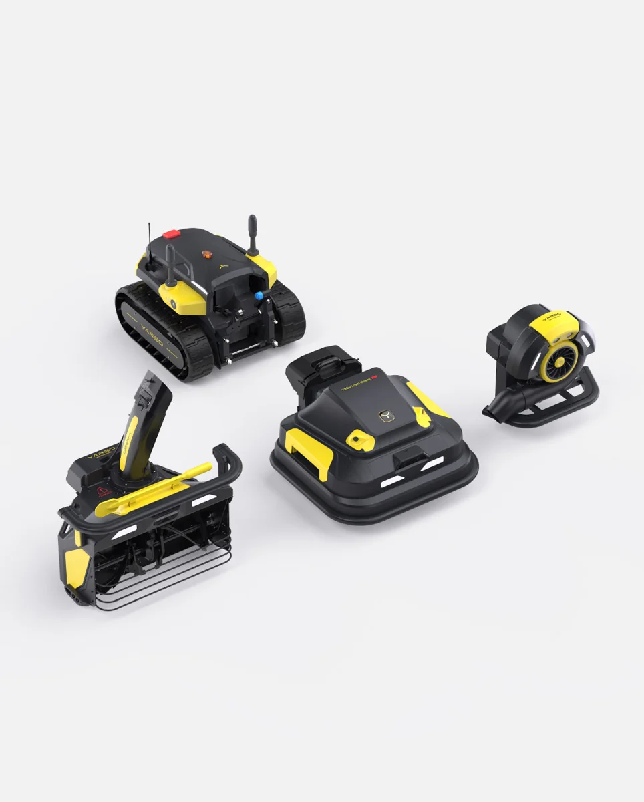
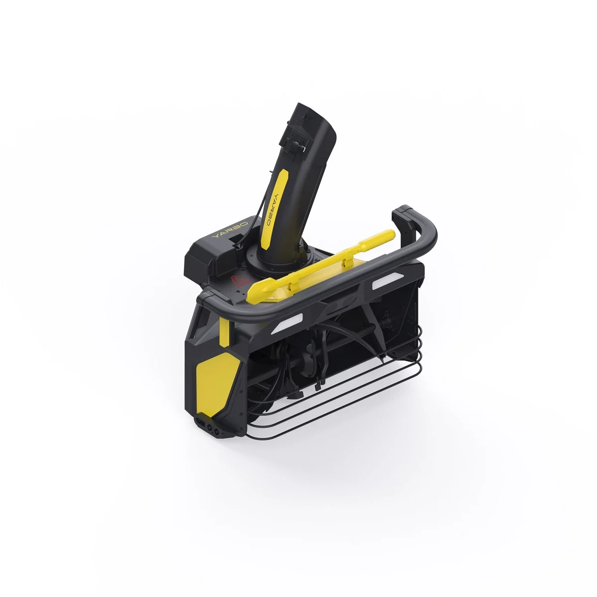
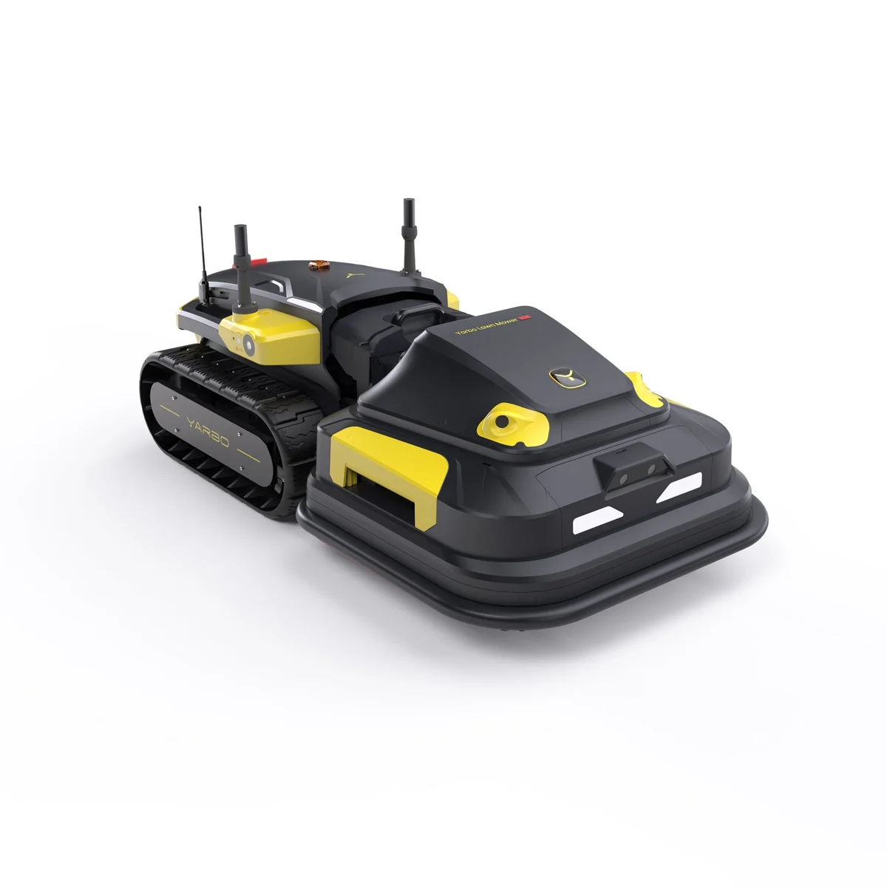

Постройте карту
Задайте рабочие зоны, маршруты и границы территории в приложении.
Зимой — снегоуборщик. Летом — газонокосилка. Меняйте навесной модуль, сохраняя роботизированную базу.

Одна роботизированная база, единое приложение и сменное оборудование под сезон. Подберём состав системы с учётом вашего участка.
Задайте рабочие зоны, маршруты и границы территории в приложении.
Подключите нужный модуль и настройте параметры его работы.
Запланируйте работу. После выполнения задачи робот вернётся на зарядку.

Yarbo Snow Blower убирает снег на дорожках, подъездных путях и открытых площадках. Направление выброса настраивается для каждой зоны.
Параметры производителя. Результат зависит от состояния снега и условий участка.
Обсудить мой участокТри сценария для знакомства с системой. Состав, совместимость и стоимость подтвердим при подборе.
Роботизированная база и снегоуборочный модуль. Для дорожек, парковки и подъезда к дому.
Запросить подбор
Одна база, снегоуборщик и газонокосилка Pro. Уход за территорией в два сезона.
Запросить подбор
Конфигурация с навесным оборудованием под сезонные задачи вашего участка.
Запросить подборСнегоуборочный и газонокосильный модули для одной платформы. Подберём оборудование с учётом задач и особенностей территории.

Двухступенчатая система уборки снега с управлением направлением выброса.

Газонокосильный модуль для регулярного ухода за газоном по расписанию.
Основные параметры для первого знакомства с модулем. Полная спецификация уточняется для выбранной версии оборудования.
Источник: Yarbo Russia| Рабочая ширина | 61 см |
|---|---|
| Высота захвата снега | 30,5 см |
| Дальность выброса | 1,8–12,2 м |
| Навигация | RTK-GPS и датчики окружения |
Поможем подобрать Yarbo или обсудим индивидуальную систему автоматизации.
Для подбора решения расскажите о площадке, задачах и желаемом сроке запуска.